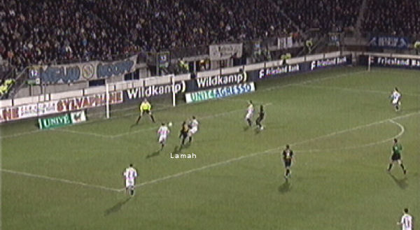
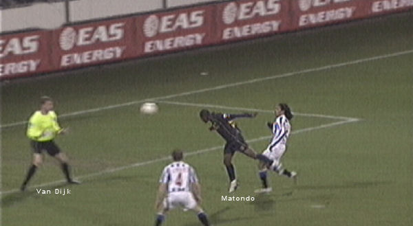
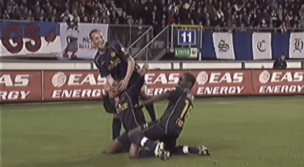
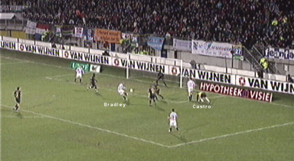
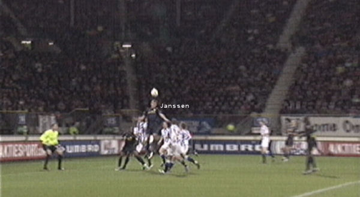
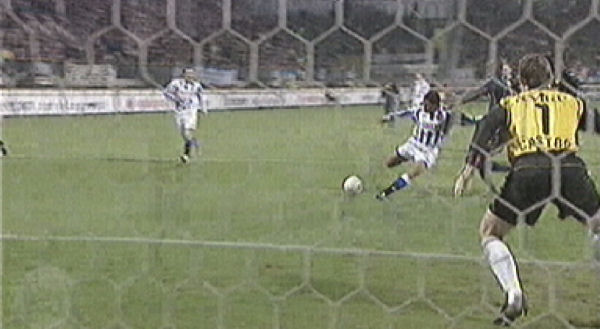
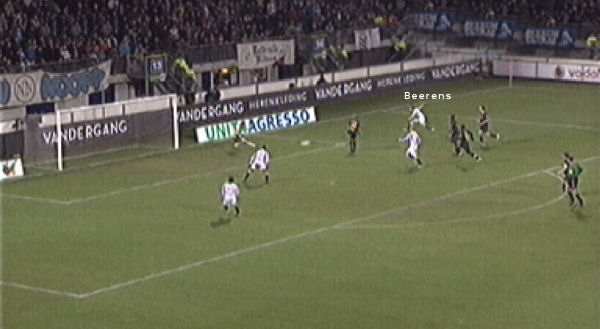
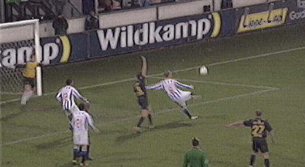
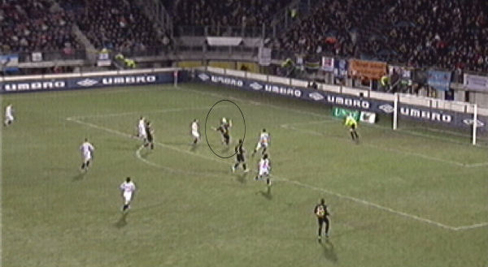

Na enkele goede kansen voor de thuisclub bereikt Tioté uit een vrije trap
Lamah die Breuer omspeelt en
de bal binnen schiet: 0-1, (24').

Drie minuten later is Lamah de aangever bij de treffer van Matondo die de
bal tussen twee Heerenveeners
van dichtbij voorbij Van Dijk kan koppen: 0-2, (27').

Het levert mooie danspasjes op.

Castro ligt uitgespeeld, Bradley kan inschieten: 1-2, (34').

Vrije trap van Hadouir belandt op de kop van Janssen die 1-3 binnenkopt,
(37').

Invaller Henrique (voor Sibon) scoort meteen: 2-3, (47').

Beerens krijgt in de kluts de bal mee en schiet via Castro 3-3 binnen,
(51').

Zoals gebruikelijk wordt Roda ook dit jaar bestolen in Heerenveen en wel
door een buitenspeldoelpunt
van Bradley dat wel erg mooi is: 4-3, (61').

Voor beide clubs volgen nog een aantal prima kansen zoals hier voor Janssen.
Het blijft echter 4-3.
Roda heeft een veilig lijkende voorsprong in een kwartier geheel weten te
verkwanselen.